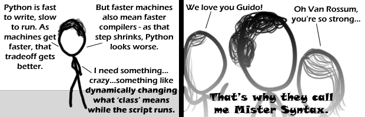

Comic JK 470
When I Feel Like It
⇤
<
?
>
⇥

⇤
<
?
>
⇥
Forum
.
RSS
.
Digg
.
Facebook
.
Reddit
.
Twitter
.
Stumbleupon
Enter your thoughts on number 470 here. Please, no spamming, trolling, or phreaking. What is this referencing? Is this an actual feature of Python? What would I Google to find the documentation properly describing this? >Metaclasses 'Least it's not Java *shudders* Two words: futamura ejaculation I wish you'd thought of it first as well. His hair is opaque. You lot happy now? Come on SMOOSH! *waits for the first person to make a song about Mister Shitface using the tune from Quean's 'Don't shit me now' - Negative Twoth* >*waits for the first person to make a song about Mister Penis using the theme from (Penis) Shaft - TheDragon* >>*waits for the first person to make a song about Mister Syntax using the theme from Titanic >>>*waits for the first person to make a song about Mister Syntax using the tune from Mister Sandman >>>*waits for the first person to make a song about Mister Syntax using the tune from Enter Sandman >>>*waits for the first person to make a song about Mister Syntax using the tune from Please Mr Postman >>>>>*waits for Mister Syntax to make a song about the people commenting wanting someone to make a song about Mister Syntax using a popular theme song* >>>>>>**waits for Carly Simon to sing a song about Mr Syntax thinking all those songs are about him...** >>>>>>> C-C-C-C-C-C-COMBO BREAKER !!!!!!!!! >>>>>>>> M-M-MEME BREA- *brutally murdered by 4chan* /delivers We're no strangers to love You know the rules and so do I A full commitment's what I'm thinking of You wouldn't get this from any other guy I just wanna tell you how I'm feeling Gotta make you understand Never gonna give you up Never gonna let you down Never gonna run around and desert you Never gonna make you cry Never gonna say goodbye Never gonna tell a lie and hurt you We've know each other for so long Your heart's been aching But you're too shy to say it Inside we both know what's been going on We know the game and we're gonna play it And if you ask me how I'm feeling Don't tell me you're too blind to see Never gonna give you up Never gonna let you down Never gonna run around and desert you Never gonna make you cry Never gonna say goodbye Never gonna tell a lie and hurt you (Repeat Chorus) Give you up, give you up Give you up, give you up Never gonna give, Never gonna give, give you up Never gonna give, Never gonna give, give you up (Last four lines repeat) I just wanna tell you how I'm feeling Gotta make you understand (Chorus times three) /end What about go? What about ruby? What about lisp? What about befunge? What about all the people that come to this webcomic just for the chat box? >>lol. sad but true. What about how awesome this comic is and how much it delivers? What about it? What about "What about it?"? What the fuck is going on here? /c-c-c-combooobreaker What about that negative twoth? >He's minus a brain... >>touche >>>Touché [interjection by ANONIMINTY: Quit Touching!] What about that trend I started? What about that trend that I didn't start? 4chan? :D